Part 0: Camera Calibration
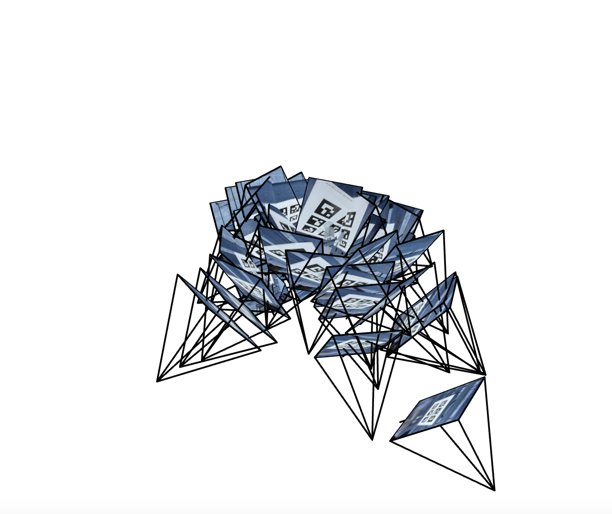
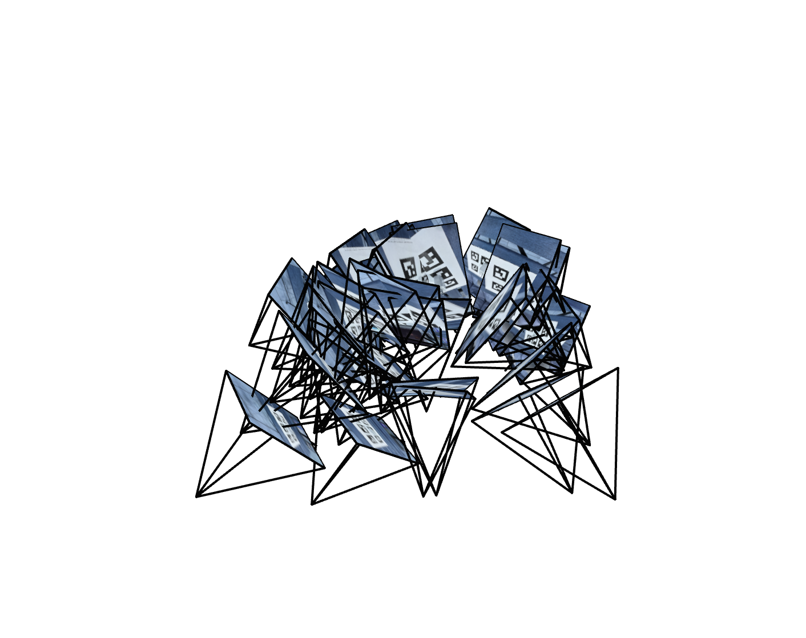
Part 1: Fit a Neural Field to a 2D Image
Network Architecture
The MLP I made follows the model architecture image in the project spec. (Essentially) network takes 2D coordinates, encodes them with positional encoding (L=10, transforming 2D to 42D), then passes through 3 linear layers with 256 neurons each (ReLU) and finally a linear layer outputting 3 RGB values through sigmoid.
Adam optimizer with learning rate 1e-2, batch size 10,000 pixels (randomly sampled each iteration), MSE loss, 2000 total iterations. Runs on my macbook.Training Progression
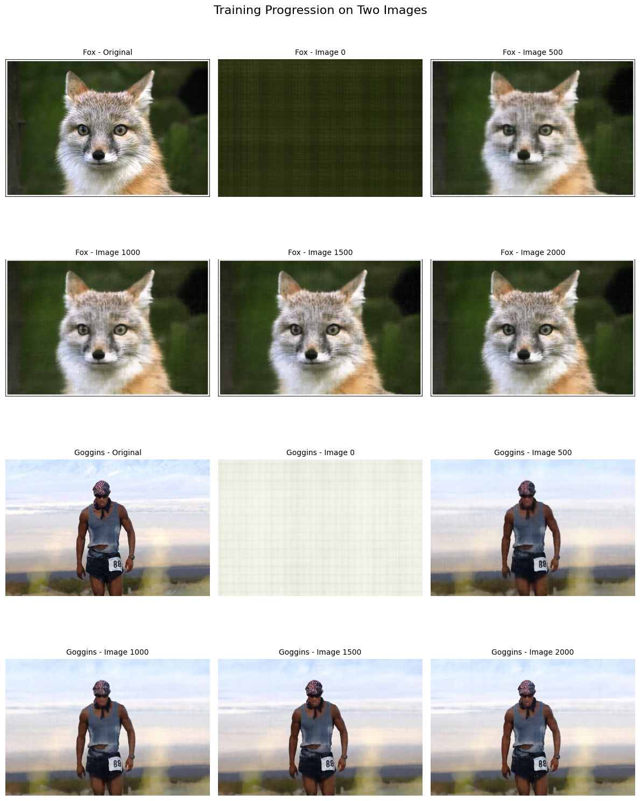
Trained on the fox image they gave us and Goggins (had to pick someone motivational). Starts as pure noise, then by 500 iterations you can make out shapes. By 2000 it's basically perfect.
Hyperparameter Comparison (2×2)
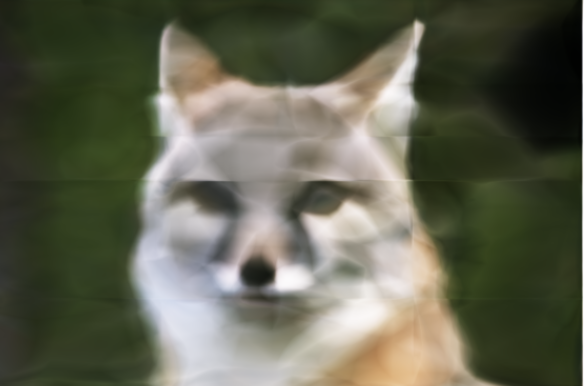
Width 64, L 2
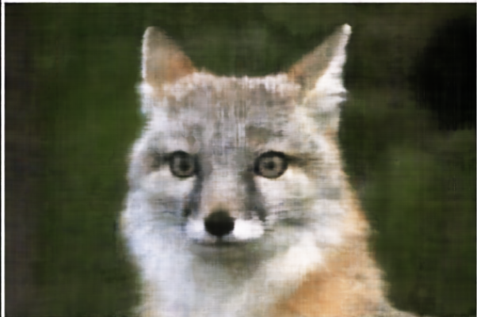
Width 64, L 10
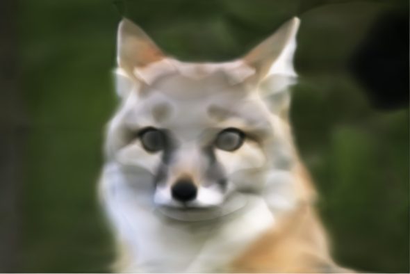
Width 256, L 2
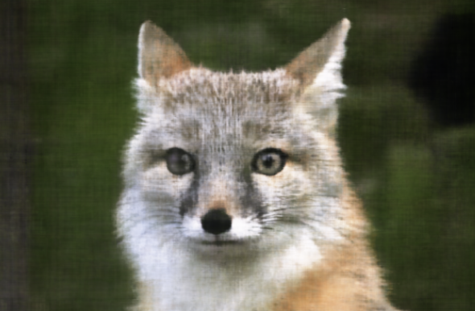
Width 256, L 10
The images we just saw show the importance of positional encoding, which also shows the importance of the NeRF paper on CV. Before, we would not get the high frequency details (left). but on the right, you notice we do get it.
PSNR Curve
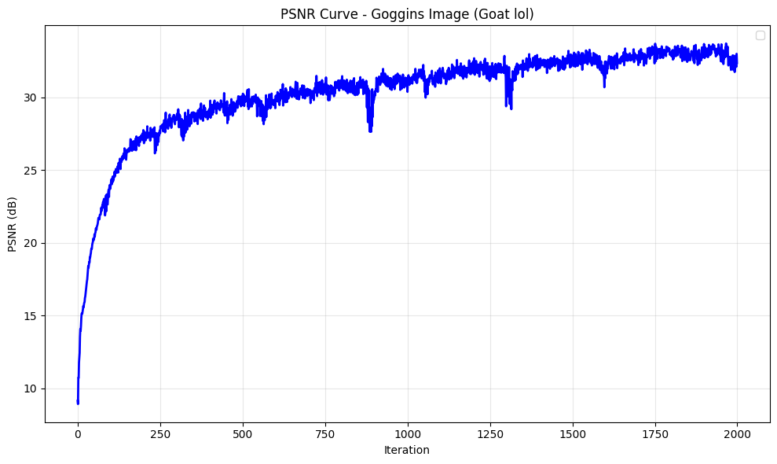
PSNR over time for Goggins. Most of the learning happens in the first 250 iterations - goes from 10 to 25 dB real quick, then slowly climbs and hovers around 33.
Part 2: Fit a Neural Radiance Field from Multi-view Images
2.1
Implemented pixel_to_ray by first converting pixels to camera coordinates using K inverse, then transforming to world space with c2w. The 0.5 pixel offset centers rays through pixel midpoints
2.2
Sample 64 points along each ray between near and far planes. Used stratified sampling with random jitter during training to avoid overfitting.
2.3
Built a RaysData class that precomputes all rays from 100 training images. During training, randomly sample batches of 10k rays.
2.4
8-layer MLP with positional encoding (L=10 for position, L=4 for viewing direction). The skip connection at layer 5 concatenates the encoded position back in - couldn't get past 19 PSNR without it.
2.5
Volume rendering turns the density and color predictions along each ray into a final pixel color. For each sample point, I calculate how much light is absorbed and how much passes through . The final color is a weighted sum where denser points contribute more
Final Result - 360° Lego Render
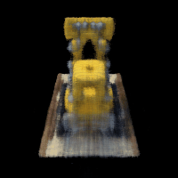
360° spin of Lego tractor (or bulldozer idk)
Rays Visualization
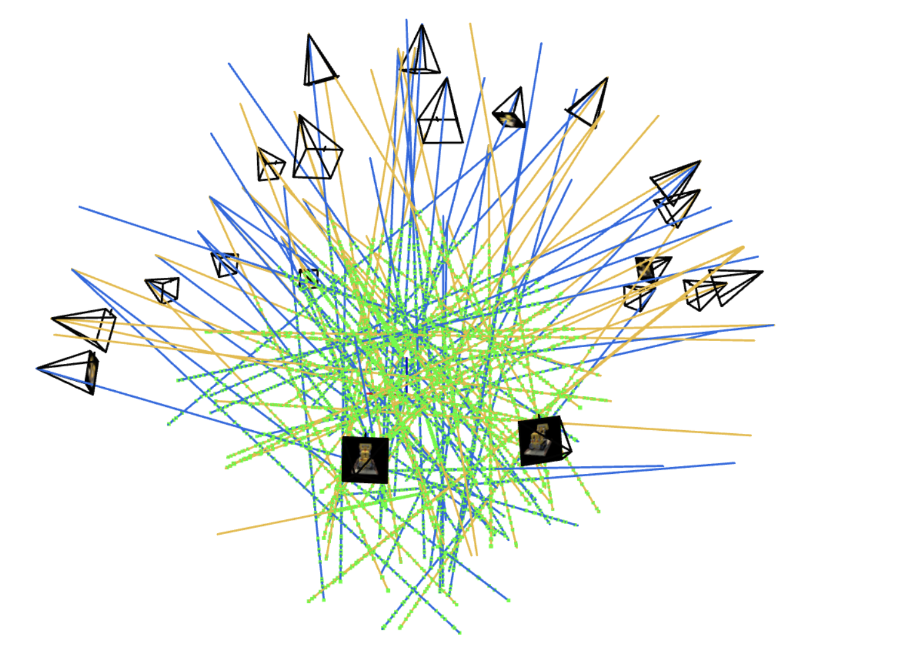
Cameras (pyramids), 100 rays (the blue and orange rays), and green sample points
Training Progress
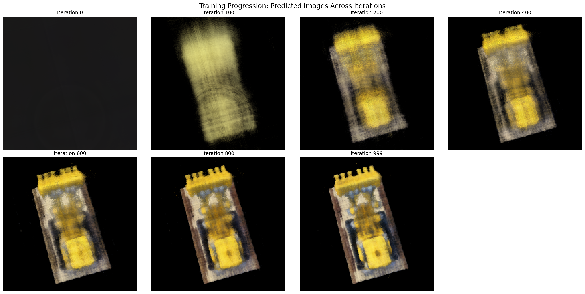
PSNR Curve
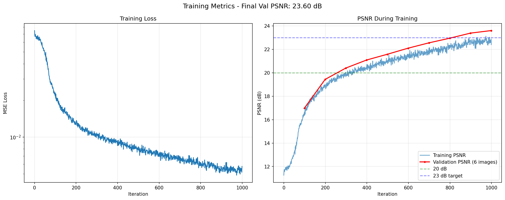
Part 2.6: Training on My Own Data
Captured a phone charger with ArUco tags. Got 30+ training images from different angles. Used the ArUco tags to get camera poses through OpenCV.
Adjusted near/far bounds to 0.02/0.5 (honestly I just looked on Ed and put similar params ref: num_samples = 64 near = 0.02 far = 0.5 step_size = (far - near) / num_samples lr = 5e-4 num_iters = 10000 bs = 10000).
Novel Views
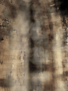
Training
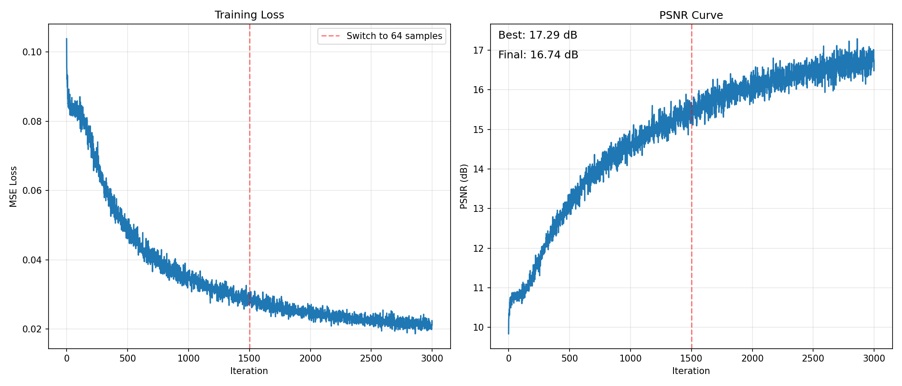
Loss curve showing the slow but consistent climb.
Progress
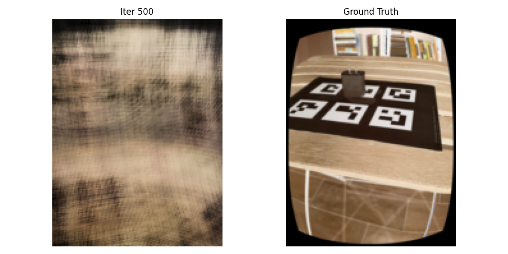
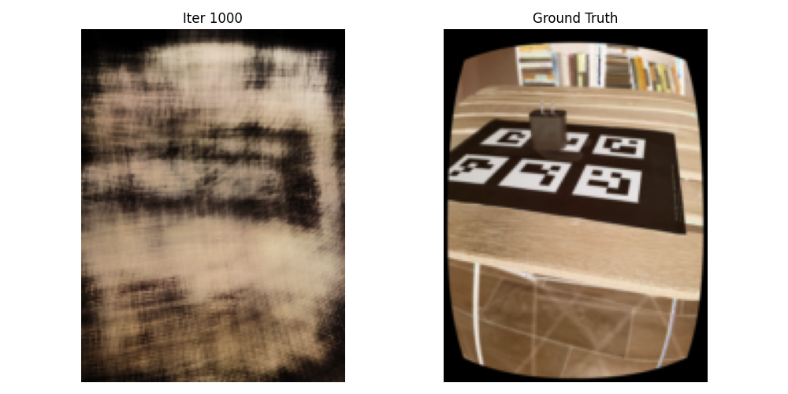
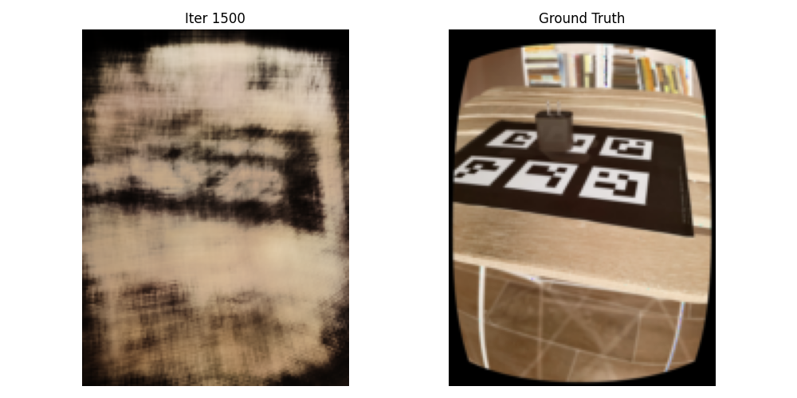
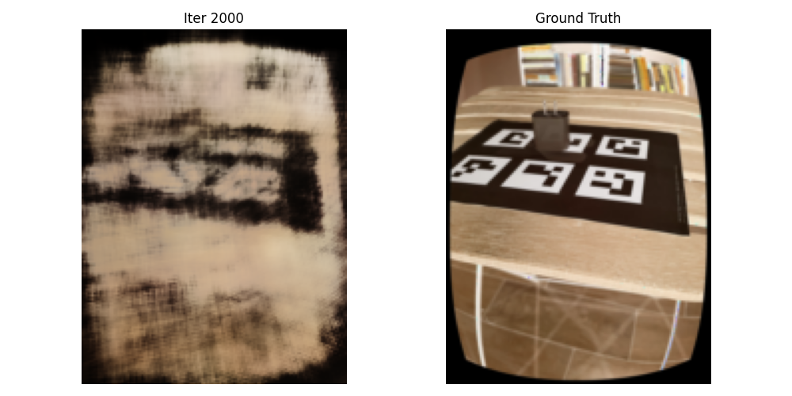
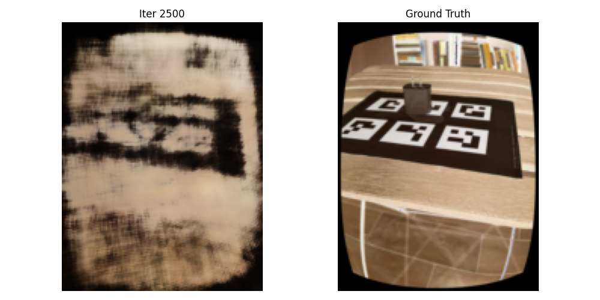